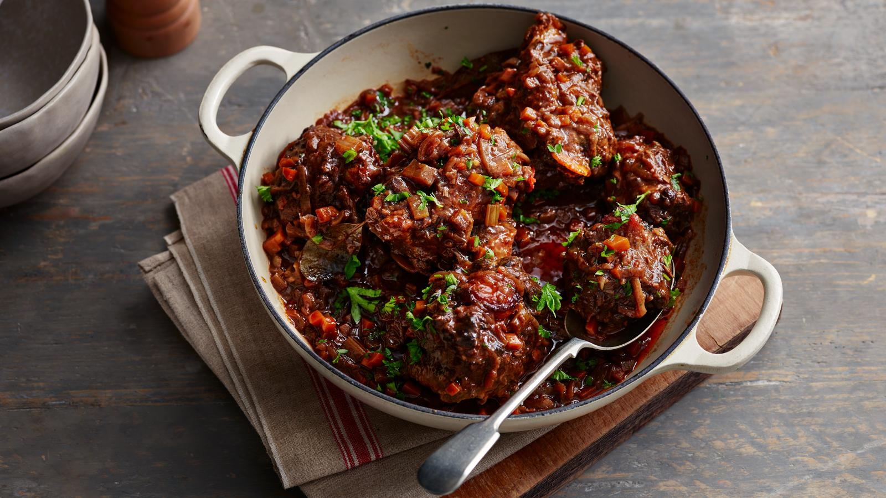

Oxtail Stew

Description
This really rich oxtail stew recipe makes the most of this economical
cut of meat for a British classic.
Ingredients
-
1.3kg/3lb oxtail, cut into chunky pieces (ask your
butcher to do this for you)
- 3 tbsp plain flour
- 3–4 tbsp sunflower oil
- 2 onions, thinly sliced
- 2 garlic cloves, finely chopped
- 2 carrots, finely chopped
- 2 celery stalks, finely chopped
- 4–5 sprigs thyme (or ½ tsp dried thyme)
- 2 bay leaves
- 300ml/½pint red wine
- 500ml/18fl oz beef stock
- 2 tbsp tomato purée
- salt and freshly ground black pepper
-
1 tbsp finely chopped flatleaf parsley, to serve
(optional)
Steps
- Preheat the oven to 150C/130C Fan/Gas 2.
-
Wash the oxtail pieces and pat dry with kitchen paper. Trim off as
much excess fat as possible. Put the flour in a freezer bag and season
well with salt and pepper. Put half the oxtail pieces into the
seasoned flour, toss well to coat then set aside on a plate. Repeat
with the remaining oxtail pieces.
-
Heat 2 tablespoons of the oil in a large frying pan. Brown the oxtail
over a medium heat for about 10 minutes, turning every now and then,
until dark brown all over. You may need to add extra oil if the pan
looks dry at any point during the browning step. Put the browned
oxtail into a flameproof casserole dish. (You may need to do this in
batches.)
-
Return the frying pan to a low heat and add the onions, garlic,
carrots and celery. Add a little extra oil if necessary. Cook gently
for 10 minutes, or until softened and lightly browned, stirring
occasionally.
-
Tip the vegetables on top of the beef and add the thyme and bay
leaves. Stir in the wine, beef stock and tomato purée. Season with
salt and pepper, put the casserole on the heat and bring to a gentle
simmer. Cover with a lid and cook in the centre of the oven for 3
hours. Stir after 1½ hours, turning the oxtail in the sauce.
-
After 3 hours, the meat should be falling off the bone and the sauce
should be thick. Remove the casserole dish from the oven and transfer
the oxtail pieces to a plate, set aside and keep warm.
- Skim any fat that has pooled on the surface of the sauce.
-
Divide the oxtail pieces between six warmed plates and spoon over the
sauce. Sprinkle with the chopped parsley, if using, and serve with
mashed potato and steamed vegetables.
Back to Home